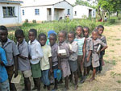
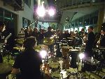
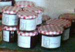

|
terre des hommes-Bilanz zum Jahrestag des Zyklons „Nargis“ in Burma
Wiederaufbau in politisch repressivem Umfeld |
Zum Jahrestag des verheerenden Zyklons „Nargis“, dem am 2. Mai 2008 rund 130.000 Menschen in Burma zum Opfer fielen, erinnert die entwicklungspolitische Kinderhilfsorganisation terre des hommes an die weiterhin katastrophale Lage der Menschenrechte in dem südostasiatischen Land. Die Repressionen durch das Militärregime seien auch dafür verantwortlich, dass die Soforthilfe und der Wiederaufbau in Burma nur schleppend vorangingen und viele Menschen noch immer in provisorischen Unterkünften lebten.
„Unsere Partner haben direkt nach dem Zyklon Nahrungsmittel, Decken, Plastikplanen und medizinische Grundversorgung für knapp 10.000 Familien und 3.500 Kinder bereitgestellt und im nächsten Schritt ein Wiederaufbauprogramm für 177.000 Menschen unterstützt. Die zahllosen Menschen, die ihre Häuser und Hütten verloren hatten, erhielten provisorische Unterkünfte; zerstörte Schulen und Gemeinschaftsgebäude wurden repariert oder wieder aufgebaut. Dafür haben wir knapp 280.000 Euro eingesetzt“, so Wolf-Christian Ramm, Pressesprecher von terre des hommes.
Erschwert und verkompliziert wurden die Hilfsmaßnahmen durch bürokratische Auflagen und Repressionen der burmesischen Militärregierung. Visa für ausländische Helfer und Experten wurden nur schleppend erteilt, schnelle Hilfstransporte erschwert und Helfer mit zweifelhaften Begründungen inhaftiert. Journalisten wurden an unabhängiger Berichterstattung gehindert, so dass eine objektive Einschätzung der Lage und der dringendsten Bedürfnisse der Betroffenen schwer möglich gewesen sei. Die Hoffnung, dass mit der Hilfe auch eine Öffnung des Landes einhergehen werde, habe sich bis heute nicht erfüllt. Die politische Opposition werde nach wie vor unterdrückt. Weiterhin führe das Regime einen gnadenlosen Vertreibungskrieg gegen die ethnischen Minderheiten, die entlang des Flusses Salween im Grenzgebiet zu Thailand leben, und setze in diesen Kämpfen in großer Zahl zwangsrekrutierte Kindersoldaten ein.
„Eine friedliche und durch die Bevölkerung selbst bestimmte Entwicklung des Landes wird erst dann zu erreichen sein, wenn in Burma die Menschenrechte respektiert werden, wenn keine Kinder mehr als Soldaten missbraucht und Menschen nicht mehr von ihrem Land vertrieben werden, weil dort Industrien oder Staudämme errichtet werden sollen, deren Gewinne die Taschen der regierenden Generäle füllen“, so Ramm.
|
Spende der Sparkasse Kuppenheim für Projekt "Mädchen am Zylinderkopf" |
Die „Radbörse“ der terre des hommes Arbeitsgruppe Murgtal/Mittelbaden, die mittlerweile zu einer der größten Radbörsen im mittelbadischen Raum gehört, lockte im März rund 2.000 Besucher nach Kuppenheim. Über 1.700 Euro Reinerlös aus dem Verkauf der Räder konnte terre des hommes dem Projekt „Mädchen am Zylinderkopf“ im Ausbildungszentrum CFIAM im westafrikanischen Burkina Faso zukommen lassen.
Die Sparkasse Baden-Baden Gaggenau zeigte sich bei den Werbungskosten spendabel und rundete darüber hinaus den Betrag auf 2.000 Euro auf.
Foto: Branimir Pavlovic , Leiter der Filiale Kuppenheim, sowie Klaus Kastner und Günter Wunsch von den Radsportfreunden übergeben den Spendenscheck an Heinz Wolf, Daniela und Josef Luft von terre des hommes. |
Donnerstag. 09. April 2009 |
Weitere Spenden für Simbabwe notwendig
Cholera breitet sich aus - fast 4.000 Opfer und rund 80.000 Infizierte |
Die Infektionskrankheit wütet im ganzen Land - und scheint völlig außer Kontrolle geraten zu sein. Fehlendes sauberes Trinkwasser und mangelnde sanitäre Einrichtungen sind der ideale Nährboden für die Cholera. Die vielen mangel- und unterernährten Simbabwer haben der schweren Infektionskrankheit nur wenig entgegenzusetzen. 3.700 Tote und mindestens 80.000 Infizierte sind die traurige Bilanz der humanitären Krise. Auch in den Nachbarländern Südafrika und Sambia gibt es schon zahlreiche Tote und Infizierte. Ausgehend von der Hauptstadt Harare werden inzwischen auch viele ländliche Regionen von der Cholera heimgesucht. Mit den bislang eingegangenen Spenden in Höhe von 63.000 Euro hat terre des hommes in einer ersten Aktion in den dicht besiedelten Vororten Harares an knapp 1.500 Haushalte Nahrungsmittel ausgegeben.
Mit Zuschüssen des Auswärtigen Amtes kann jetzt ein weiteres Großprojekt beginnen: In den Distrikten Gutu, Hwange, Muzarabani und Rushinga verteilen langjährige Partnerorganisationen von terre des hommes Nahrungsmittel und Tabletten zur Wasserdesinfizierung an Familien. Davon sollen besonders die unter fünfjährigen Kinder profitieren. Da sie noch nicht zur Schule gehen und deshalb dort keine warme Mahlzeit erhalten, sind diese Kinder besonders von Unterernährung betroffen. In den ausgewählten Distrikten sterben nach Angaben der terre des hommes-Partnerorganisationen wöchentlich zwei bis fünf Kinder an Unterernährung. Mit diesem Projekt bekommen 28.000 Kindern unter fünf Jahren über einen Zeitraum von vier Monaten einen besonders nährstoffreichen Brei. Außerdem werden Trinkwasserpumpen instandgesetzt oder neue gekauft, um so die Versorgung der Bevölkerung mit sauberem Wasser sicherzustellen.
Die Krankheit der Krise: Cholera
Cholera ist eine schwere bakterielle Infektionskrankheit. Die Erkrankten werden von schwerem Durchfall und Erbrechen heimgesucht. An dem hohen Flüssigkeitsverlust kann ein unbehandelter Infizierter sterben. Die Ansteckung erfolgt über unreines Trinkwasser oder verunreinigte Nahrung. In Simbabwe sind die zusammenbrechende Infrastruktur, kaputte Abflussrohre und die Versorgung mit verunreinigtem Wasser Hauptursachen für den Ausbruch von Cholera. Außerdem ist durch die jahrelange Misswirtschaft das Gesundheitssystem so marode, dass sich die Cholera rasend schnell verbreiten kann. Gesundheitsstationen sind entweder gar nicht mehr besetzt oder so dürftig ausgestattet, dass die Basisversorgung nicht mehr gewährleistet ist.
Die Menschen sind gezwungen, schmutziges Wasser zu trinken, indem sie Wasserlöcher graben. Weil auch die sanitären Einrichtungen nicht mehr funktionieren, müssen sie ihre Notdurft im Freien verrichten. Während der Regenzeit werden die Abwässer in diese Wasserlöcher gespült.
Politischer Umbruch?
Nur ein politischer Wandel kann die humanitäre Krise im Land bewältigen. Inzwischen ist der Oppositionsführer Morgan Tsvangirai (MDC, Bewegung für demokratischen Wandel) als Premierminister vereidigt. Doch das monatelange Tauziehen um die entscheidenden Ministerposten für Justiz und Inneres sind nicht wirklich gelöst. Für das der Polizei übergeordnete Innenministerium ist eine Rotation vorgesehen, die MDC konnte sich bei der Besetzung des Finanz- und Gesundheitsministeriums durchsetzen. Eine gewaltige Aufgabe für die MDC. Obwohl der ehemalige Gewerkschaftschef viele Zugeständnisse machen musste, hat unter anderem der Druck von Seiten der »Entwicklungsgemeinschaft südliches Afrika« (SADC) die Kontrahenten Robert Mugabe und Morgan Tsvangirai wieder an einen Verhandlungstisch geführt. Nachdem ein monatelanges Geschacher um Posten und Positionen das Land gelähmt hat, könnte jetzt durch die Einbeziehung Tsvangirais in die Regierung Bewegung in das Land kommen. Das krisengeschüttelte Land aus Hyperinflation, Hungersnot und Choleraausbruch wieder herauszuführen, scheint dennoch eine fast unlösbare Aufgabe zu sein.
terre des hommes bittet weiter um Spenden für die Opfer der Cholera in Simbabwe.
Stichwort: Nothilfe Simbabwe:
Spendenkonto 120 790
Sparkasse Gaggenau-Kuppenheim
BLZ 665 512 90
Spendenkonto 102 748 00
VoBa Baden-Baden/Rastatt
BLZ 662 900 00
Weitere Informationen:
|
Linktipps: Steuergerechtigkeit |
Das Netzwerk Steuergerechtigkeit (Tax Justice Network) setzt sich für eine Stärkung der öffentlichen Finanzen und für ein gerechteres Steuersystem ein - in Deutschland und weltweit. Es fordert ein entschiedenes Vorgehen gegen Steuerflucht und missbräuchliche Steuervermeidung. Das Netzwerk ist ein Zusammenschluss von sozial- und entwicklungspolitischen Organisationen sowie Einzelpersonen.
Auf deutsch gibt es jetzt regelmäßige Infos unter http://steuergerechtigkeit.blogspot.com/ |
Oberster US-Gerichtshof weist Klage von Agent-Opfer ab |
Der US-amerikanische Oberste Gerichtshof beschloss am 27. Februar 2009, die Klage der VAVA und vietnamesischer Agent Orange Opfer gegen die US-Herstellerfirmen des Gifts nicht anzunehmen. Der Supreme Court lehnte es kommentarlos ab, den Fall, welcher bereits durch niedere Gerichte 2005 und 2008 abgelehnt worden war, zu behandeln.
Weiterlesen |
Online-Petition: Freiheit für Aung San Suu Kyi |
Aung San Suu Kyi steht noch immer unter Hausarrest und über 2000 Mönche und Aktivisten, die für eine Demokratisierung des Landes eintraten, werden unter menschenunwürdigen Bedingungen in Burmas Gefängnissen gefangen gehalten. Ihr Vergehen: Der friedliche Ruf nach Demokratie.
Burmas friedliche Demokratiebewegung bittet UN-Generalsekretär Ban Ki Moon um Hilfe bei der Freilassung aller politischen Gefangenen. Verleihen Sie dieser Bitte Nachdruck - Unterzeichnen Sie die Petition:
"Freiheit für Burmas politische Gefangene" |
StopEPA-Kampagne geht weiter |
Mit einem Brief an alle Bundestagsabgeordneten wurde die Postkartenaktion gegen die Europäischen Wirtschaftspartnerschaftsabkommen abgeschlossen, die auch von terre des hommes unterstützt wurde. Zugleich startet die StopEPA-Kampagne eine neue Unterschriftenaktion. Es geht um den Stopp der Ratifizierung zweier Abkommen zwischen der EU und Karibik-Staaten (Cariforum) sowie der Elfenbeinküste.
Weiterlesen |
Donnerstag. 09. April 2009 |
Konzert und Tanz-Happening
Zum 30. Jahrestag von „terre des hommes" in Gaggenau: Gastspiel von Äl Jawala |
„Oriental Popsong hieß das erste, ungemein vitale und lebendige Stück, mit dem sich „Äl Jawala" vorstellte. Mit dem Namen des Stückes ist auch schon ein Teil der Nische beschrieben, die dieses Freiburger Quintett sehr erfolgreich besetzt: Popnummern, die viele Einflüsse zulassen - Balkan Soul ebenso wie Anklänge an die türkische und orientalische Musik, Gypsy und Manele, Eindrücke von Reisen nach Osteuropa und ganz unterschwellig auch Jazz.
Und aus diesem, die Kulturgrenzen auflösenden „hitzigen Cocktail", wie es auf der Homepage des Ensembles heißt, wird fesselnde Musik, die mitreißt und in die Beine geht. So erlebte man das beim Konzert zum 30. Jahrestag der Aktivitäten von „terre des hommes" in Gaggenau am Samstagabend im Lichthof der Carl-Benz-Gewerbeschule. Auch das zweite Stück „Asphalt Pirates", Titelstück der neuen, im Mai erscheinenden CD, hatte einen programmatischen Namen, denn nicht zuletzt wurde „Äl Jawala" durch Straßenmusik und auf Festivals in ganz Europa bekannt.
Weiterlesen:
|
Donnerstag. 09. April 2009 |
Wolfgang Raub spendet 1.000 Euro für terre des hommes
Marmeladenverkauf für Kinderarbeiterinnen in Indien |
Oberndorfs Sternekoch Wolfgang Raub kochte im vergangenen Jahr mit seinem Küchen-Team rund180 Gläser Marmelade aus selbst gepflückten Früchten.
Marmelade wie zu Omas Zeiten: verschiedene Erdbeerkompositionen, Pflaumen, Quittengelee und als Besonderheit schwarze Nüsse. „Es ist ein kompliziertes verfahren, Marmelade aus schwarzen Nüssen herzustellen. Im Juni werden die grünen Nüsse mit ihrer noch weichen Schale vom Baum gepflückt, dann in Sirup eingelegt, so dass sie durchs Oxidieren schwarz werden. Daraus kann dann später die Marmelade gekocht werden“, so Wolfgang Raub.
Präsentation und Verkauf übernahmen Gisela und Katharina Raub sowie Christel Birzer. „Uns hat die Aktion viel Spaß gemacht, deshalb werden wir sie fortsetzen und sicher wieder einen stolzen Betrag zusammenbringen“, zeigte sich Gisela Raub recht zuversichtlich.
Nachdem die Raubs im vergangenen Jahr UNICEF unterstützten, kam dieses Jahr terre des hommes zum Zuge. Es ist bereits das fünfte Mal, dass Wolfgang Raub mit Team und Familie terre des hommes Hilfe anbietet, z. B. bei der Bewirtung des Kinderfestes und tdh-Basars.
Bildung für junge Textilarbeiterinnen
Die Hilfsorganisation wird den jetzt erhaltenen stolzen Betrag von 1.000 Euro für das Bildungs-Projekt CSED in der indischen Textilstadt Tirupur verwenden. Dort arbeiten Tausende von Kindern unter 15, viele sogar unter 12 Jahren in Textilfabriken. Sie arbeiten sechs Tage in de Woche, zwölf Stunden täglich. Die Schule können sie darum nicht besuchen. Die Organisation CSED wird von terre des hommes unterstützt, um in 20 Zentren –vor allem in den Slums und Dörfern, aus denen die Kinderarbeiter kommen- Spielmöglichkeiten, Musikinstrumente mit Betreuern, Lese- und Schreibkurse sowie Büchereien und medizinische Versorgung zur Verfügung zu stellen.
|
Donnerstag. 09. April 2009 |
Action for Global Health
„Gesundheit in der Krise“: Der dritte Bericht des europäischen Netwerkes
Frauen und Kinder sind besonders von der Wirtschaftskrise betroffen |
Anlässlich des Weltgesundheitstages stellt Action for Global Health den dritten Bericht „Gesundheit in der Krise“ vor. Das Netzwerk aus 15 europäischen Nichtregierungsorganisationen warnt die Geberländer eindringlich davor, die Wirtschaftskrise als Ausrede zu benutzen, um die Entwicklungszusammenarbeit im Gesundheitssektor zu reduzieren. „Die europäischen Regierungen müssen sich mit der gleichen Entschlossenheit, mit der sie zur Rettung von Banken und Unternehmen Milliardenbeträge zur Verfügung gestellt haben, nun auch für die Gesundheit in den Entwicklungsländern engagieren“, fordert Dr. Nadja Jacubowski, Referentin für Gesundheit von terre des hommes.
Die Armut in den Entwicklungsländern wird sich in der wirtschaftlichen Krisensituation weiter verschärfen, so das Fazit des Netzwerkes Action for Global Health, in dem terre des hommes und die Welthungerhilfe als deutsche Nichtregierungsorganisationen vertreten sind. Frauen und Kinder werden von den Folgen besonders betroffen sein. „Schätzungen zufolge muss damit gerechnet werden, dass aufgrund der Krise zwischen 200.000 und 400.000 Kinder unter fünf Jahren zusätzlich sterben“, erklärt Nadja Jacubowski. Derzeit sind mehr als 70 Prozent der absolut Armen und mehr als 60 Prozent der Analphabeten weiblich. Frauen und Mädchen haben schlechteren Zugang zu Ressourcen, wie zum Beispiel Grundbesitz. In Entwicklungsländern produzieren Frauen zwar 80 Prozent der Grundnahrungsmittel, aber weniger als zwei Prozent von ihnen besitzen Land. Die Wirtschaftskrise wird dieses Missverhältnis noch verschärfen.
Die Weltbank rechnet derzeit damit, dass 2009 wegen der Krise weltweit mehr als 50 Millionen Menschen in Armut abstürzen. Schon jetzt sind etwa 1,5 Milliarden Menschen arm, das heißt, sie müssen mit weniger als zwei US-Dollar am Tag auskommen. „Die Krise wird die Gesundheit der Ärmsten in den Entwicklungsländern besonders hart treffen. Es werden mehr Menschen sterben, mehr erkranken und mehr Menschen die Hilfe von medizinischem Personal benötigen. Darauf muss die deutsche Regierung zusammen mit den anderen europäischen Gebern jetzt reagieren“, fordert Gesundheitsreferent Stephan Kreischer von der Welthungerhilfe.
Weitere Informationen
|
|
|
|
 Ansprechpartner Ansprechpartner
|
|
Wolfgang Deppisch
(Projektinfos)
Tel. 07222 / 32927
Heinz Wolf
(Sponsoring, Allgemeines)
Tel. 07225 / 75543
weitere Ansprechpartner
|
|
Erlöse
1992-2012
|
|

Jahr |
Euro |
1992 |
70.000 |
1993 |
75.600 |
1994 |
83.883 |
1995 |
69.617 |
1996 |
51.412 |
1997 |
61.749 |
1998 |
60.333 |
1999 |
68.742 |
2000 |
85.492 |
2001 |
106.375 |
2002 |
78.937 |
2003 |
84.027 |
2004 |
76.662 |
2005 |
149.941 |
2006 |
84.497 |
2007 |
105.958 |
2008 |
104.053 |
2009 |
100.833 |
2010 |
107.254 |
2011 |
103.600 |
| 2012 |
158.250 |
| 2013 |
163.420 |
1977-2013 |
mehr als 2,7 Mio. € |
|
Detailansicht der Erlöszahlen |
|
|


;)
;)
;)